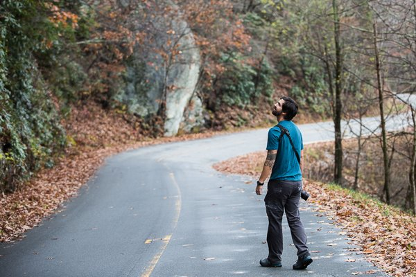

Packing up your childhood home and building your new home with your bare hands is stressful. So we took a vacation (yes, before we go on vacation) with our parents to North Carolina. The Tar Heel State is home to some of our extended family, good climbing spots, and real fall weather (not this 85 degree Florida fall weather) so why not? Plus this fun time together as a family, before Justin and I fly the coop for a year, would be our last family getaway for quite a while.
Justin and I arrived late at night and went straight to bed so we could wake up early and make a two-hour drive to a climbing spot called The Dump. It was surprisingly beautiful for a place with such a name; a huge chunk of natural rock just a short walk from the road. What was even more surprising was the fact that it had been raining and a light drizzle continued the whole time we were there, making climbing conditions next to impossible. But we figured we were already there so we decided to give it a go anyway. Justin is a skilled climber but myself, not so much. I knew I had my work cut out for me when even he struggled up most of the route due to the wet rock. Before my ascent, we decided that it would be the last of the day. It was just too wet to continue climbing. Two guys in the middle of nowhere slipping and sliding on rocks, being held by nothing but a rope was not a risk worth taking. I made it up most of the route before resorting to climbing the rest of the way up the rope. As if that didn't look amateurish enough, I struggled to get Justin's quick-draws off of the rock. Since it was my first time cleaning a route, or detaching all the quick-draws on the way down, I was a little nervous that my next move would send me plummeting to the ground. But Justin stood underneath and assured me that the method he had taught me was safe because he "saw it on a YouTube video once."

Before returning to the cabin, we took a little walk down the street to check out some other climbing routes. An eerie fog settled on the road making a cool backdrop for some photos. We ended up walking around taking photos more than we climbed. Not an ideal climbing excursion, but a fun one nonetheless.
The next day we drove as a family to the Great Smoky Mountains National Park. We'd caught wind that it was perfect weather to see elk grazing in the vast, grassy fields within the park. It turns out that the continuous drizzle made it even better conditions for the elk, as they prefer cooler temperatures. This made them comfortable to roam even the smaller fields before dusk. Right when we entered the park we saw a whole field of male and female elk grazing right near the road. Justin and I hopped out of the car to grab some photos and had a blast getting as close as we could to the gentle giants. But it was Mom who was the real MVP, holding an umbrella over our camera gear so it wouldn't get too wet from the light rain.
On our last full day, we went into Weaverville (a little town west of Asheville) to hang out and barbecue at our cousin's house with her and her husband, our aunt, uncle, and other cousins. Right when we got there, our cousin's husband asked, "Are you ready to get your belly warm?" The answer was "yes," and he brought out 5 different flavors of moonshine. You could tell it was the good stuff because they were in assorted sizes of mason jars with the flavors of shine written on the lids in magic marker. If you ask Luther where he gets his shine, he'll just say, "I know a guy," and pour you another. After we got our bellies warm with shine, we played cornhole all afternoon and ate burgers, beans, mac n' cheese, and homemade ice cream. Life doesn't get much better.
Returning home with some new memories, we were well rested and ready to get back to work on the van. With less than two months left until departure, we still have a good amount of work to do on the van, we have to quit our jobs, I have to graduate college, and we have to tie up some loose ends at home. It was great to take a little break from reality but now the real work begins.